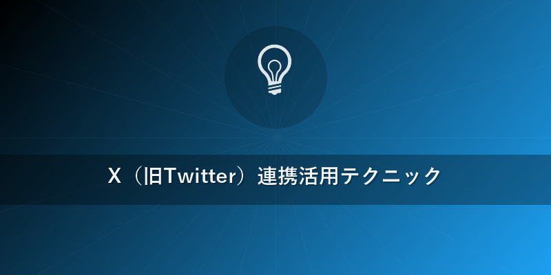

Grok 使い方 2026年完全ガイド: xAI最新AIを徹底活用
この記事でわかること
- 2026年最新版Grokの始め方から、高度な「Grok 使い方」の基礎を習得できます。
- X（旧Twitter）との強力な連携機能を活用し、リアルタイム情報を最大限に引き出すテクニックを習得できます。
- ChatGPT、Claude、Geminiなど他の主要AIと比較し、Grokの独自性とその真価を理解できます。
結論
2026年現在、Grokはイーロン・マスク率いるxAIが提供する、リアルタイム情報へのアクセス、低検閲モード「Fun Mode」、そしてマルチエージェント並列処理を特徴とする画期的なAIです。特にX（旧Twitter）の膨大なデータをリアルタイムで分析する能力は、速報性やトレンド分析において他の追随を許さない独自の「Grok 使い方」を実現します。X Premium+に加入することで、この最先端AIをあなたの情報収集、コンテンツ生成、問題解決に活用する第一歩を踏み出せます。
本題
Grokとは？xAIが目指す「真のAI」
Grokは、イーロン・マスクが設立したxAIによって開発された生成AIです。xAIの究極的な目標は「宇宙の真の理解」であり、Grokはその探求の第一歩を担う存在として位置づけられています。2026年にはGrok-2を筆頭に複数のモデルが稼働し、その能力は日々進化を続けています。Grokの最大の特徴は、以下の3点に集約されます。
- リアルタイムX（旧Twitter）データへのアクセス: 世界中のリアルタイムな情報源として機能するXのデータを直接参照し、最新の出来事やトレンドを即座に把握できます。
- 低検閲モード「Fun Mode」: 従来のAIが倫理的配慮から回答を避けてきたような質問に対しても、ユーモアを交えたり、より率直な意見を述べたりする傾向があります。
- マルチエージェント並列処理: 複数のAIエージェントが連携し、複雑な問題を多角的に分析・解決する能力を持ちます。
これらの独自性が、一般的な「Grok 使い方」だけでなく、より専門的で実践的な活用を可能にしています。
Grokの始め方：登録から初期設定まで
Grokを始めるための手順は非常にシンプルです。「Grok 使い方」の第一歩として、まずは以下のステップを踏んでいきましょう。
- X Premium+への加入: Grokの利用には、X（旧Twitter）の最上位有料プランである「X Premium+」への加入が必要です。XのウェブサイトまたはアプリからPremium+に登録してください。これにより、Grokへのアクセス権が付与されます。
- Grokへのアクセス: X Premium+に加入後、Xのウェブサイト（x.com）またはモバイルアプリを開きます。通常、サイドバーまたは設定メニュー内にGrokのアイコンまたは項目が表示されます。それをクリックしてGrokのインターフェースを起動します。
- 初期設定とプライバシー確認: 初めてGrokを起動する際、利用規約の同意やプライバシー設定の確認が求められる場合があります。特に、Xのデータ連携に関する許諾は「Grok 使い方」の中核をなすため、内容を確認し同意に進んでください。
- プロンプト入力の開始: Grokのチャット画面が表示されたら、すぐに質問や指示を入力して会話を開始できます。特別なセットアップは不要です。
これで「Grok 使い方」の準備は完了です。あなたはもう、xAIの最先端AIと対話する準備ができています。
Grokの基本操作：チャットとモード選択
Grokのインターフェースは直感的で、他のチャットAIと大きな違いはありませんが、いくつかのGrok独自の機能を知っておくと、より効率的な「Grok 使い方」が可能になります。
- チャットボックスへの入力: 画面下部のチャットボックスに質問や指示を入力し、Enterキーで送信します。日本語での入力も完全にサポートされており、自然な対話が可能です。
- 「Fun Mode」への切り替え: チャット画面の右上、または設定メニュー内に「Fun Mode」をオン/オフするトグル（スイッチ）があります。これをオンにすることで、Grokはよりユーモラスで、時に挑戦的な回答をするようになります。ただし、このモードでも倫理に反する不適切なコンテンツの生成は制限されます。
- 会話履歴の管理: 過去の会話は左側のサイドバーに履歴として表示されます。特定の会話を選択して再開したり、削除したりすることが可能です。これにより、文脈を維持したまま、継続的にプロジェクトを進める「Grok 使い方」が実現します。
- ファイルアップロード機能（2026年時点）: Grok-2世代では、画像やPDFなどのファイルをアップロードし、その内容に基づいて質問したり、分析させたりするマルチモーダル機能も強化されています。具体的な操作はチャットボックス横のクリップアイコンなどから行えます。
Grokの独自機能：リアルタイムX検索とマルチエージェント
「Grok 使い方」を語る上で欠かせないのが、他のAIにはないこれらの独自機能です。これらを理解し活用することで、Grokの真価を最大限に引き出せます。
- リアルタイムX検索（Web Browsing）: GrokはXの全ポストをリアルタイムで検索・分析する能力を持っています。これは一般的なウェブ検索とは異なり、X上の議論の鮮度と広がりを直接把握できることを意味します。
- 活用例: 「今、Xで最も話題になっている日本のテクノロジーニュースは何？」と尋ねるだけで、即座に最新のトレンドをまとめた回答が得られます。
- 活用例: 特定のイベント（例: 「2026年のオリンピック開会式に関するXでの反応をまとめて」）や株価の動向、製品の評判などをリアルタイムで追うことが可能です。
- マルチエージェント並列処理: Grokは単一の巨大モデルとして機能するだけでなく、内部で複数の独立したAIエージェントを並列に動作させ、複雑なタスクを分担して処理するアーキテクチャを採用しています。これにより、より複雑で多角的な問題解決や、情報整理が可能になります。
- 活用例: 「量子コンピューティングの最新の研究動向と、それがビジネスに与える影響について、複数の視点から分析して」といった高度な要求に対し、各エージェントが情報収集、分析、要約を分担し、統合された質の高い回答を生成します。
- 活用例: 長文の要約や複雑なデータセットの分析において、複数のプロセスを同時に進めることで、高速かつ正確な結果を導き出します。
これらの強力な機能こそが、Grokを単なるチャットAI以上の存在たらしめています。{{internal_link:Grok-2最新機能詳解}}を活用することで、ビジネスから個人利用まで、幅広いシーンで革新的な「Grok 使い方」を発見できるでしょう。

X（旧Twitter）連携活用テクニック
Xとのリアルタイム連携は、Grokの最も強力な武器です。ここでは、具体的な活用テクニックをいくつか紹介します。
- リアルタイムトレンド分析: ライブイベントの反応、市場の動向、特定のキーワードのバズり具合などを、タイムラグなく把握できます。
- 実践例: 「今日Xで日本の政治に関する最も活発な議論は何か？主要な論点を簡潔にまとめて。」
- 実践例: 「新発売のスマートフォンに関するXでの評価は？ポジティブな意見とネガティブな意見を抽出して。」
- 特定のポストやアカウントの深掘り: 著名人や専門家、競合他社のXアカウントの発言や過去の議論を瞬時に検索し、その背景や文脈を深く理解するのに役立ちます。
- 実践例: 「@elonmuskが最近言及したGrokに関する新しい情報は何か？そのポストのユーザー反応も分析して。」
- 実践例: 「〇〇社（競合企業）の最新製品発表に関するXでの主要な言及を分析し、ユーザーの関心がどこにあるか教えて。」
- ポスト生成支援: トレンドに合わせた魅力的なポスト文案、最適なハッシュタグの提案、さらには特定のトピックに関するディベートの火付け役となるような問いかけをGrokに生成させることができます。
- 実践例: 「今日のAIニュースに関する、エンゲージメントが高いXポストのアイデアを3つ提案して。ハッシュタグも付けて。」
- 実践例: 「環境問題に関するXでの議論を活性化させるための、刺激的な問いかけを生成して。」
- 危機管理と評判モニタリング: 自社やブランドに関するX上の言及をリアルタイムで監視し、ネガティブな兆候を早期に発見したり、ポジティブな評判を増幅させたりするのに活用できます。
- 実践例: 「自社製品名に関するX上のネガティブな言及を監視し、緊急性のあるものを抽出してレポートして。」
これらの「Grok 使い方」は、ビジネスパーソンからマーケター、研究者、そして一般のユーザーまで、Xの情報を最大限に活用したいすべての人にとって非常に強力なツールとなります。{{internal_link:X連携の高度なGrok活用術}}でさらに深い情報を得ましょう。
他のAIとの比較
Grokを最大限に活用するためには、他の主要なAIモデルとの違いを理解することが重要です。ここでは、ChatGPT、Claude、Gemini、Copilotといった主要な競合AIと比較し、Grokのユニークな立ち位置を明確にします。
| 機能/特徴 | Grok (xAI) | ChatGPT (OpenAI) | Claude (Anthropic) | Gemini (Google) | Copilot (Microsoft) |
|---|---|---|---|---|---|
| 基盤モデル | Grok-2 (2026想定) | GPT-4o (2026想定) | Claude 3 Opus (2026想定) | Gemini Advanced (2026想定) | GPT-4o, DALL-E 3 (2026想定) |
| リアルタイムXデータ | ◎ (独占アクセス) | × (Web検索は可能) | × (Web検索は可能) | △ (Google検索経由) | △ (Bing検索経由) |
| 検閲レベル | 低検閲 (Fun Modeあり) | 中程度 (安全重視) | 高度 (憲法AIアプローチ) | 中程度 (安全重視) | 中程度 (安全重視) |
| マルチエージェント | ◎ (ネイティブ統合) | △ (Plugins/Functions) | △ (Tool Use) | △ (Extensions) | △ (Plugins/Built-in) |
| 画像生成 | △ (開発中/連携) | ◎ (DALL-E 3) | × | ◎ (Imagen) | ◎ (DALL-E 3) |
| 利用料金 | X Premium+に付属 | 月額制 | 月額制 | 月額制 | 月額制 |
| 強み | 速報性、反逆性、Xデータ深掘り、マルチエージェント処理 | 汎用性、多様なPlugins、画像生成、APIエコシステム | 長文処理、倫理的推論、高度な論理的思考 | マルチモーダル、Googleエコシステム連携、大規模データ処理 | Microsoft製品連携、Web検索、生産性ツール |
Grokの最大のアドバンテージは、やはりXからのリアルタイムデータへの独占的なアクセスと、低検閲モードによる表現の自由度です。これは、情報鮮度が求められるジャーナリズム、マーケティング、トレンド分析などの分野でGrokを唯一無二の存在にします。また、マルチエージェント処理は、複雑なタスクにおけるGrokの「Grok 使い方」を一段と高度なものにしています。
よくある質問（FAQ）
Q1: Grokは無料で使えますか？
A1: Grokの利用には、X Premium+（旧Twitter Blueの最上位プラン）のサブスクリプションが必要です。現在のところ、単体での無料提供は行われていませんが、X Premium+に加入することで、より広範なXの機能と合わせてGrokを利用できます。したがって、「Grok 使い方」を始めるにはまずX Premium+への登録をご検討ください。
Q2: Grokは日本語に対応していますか？
A2: はい、Grokは高度な多言語対応能力を備えており、もちろん日本語でのチャット、質問、回答生成が可能です。自然で流暢な日本語で対話でき、日本のユーザーも安心して「Grok 使い方」を習得し、様々なタスクに活用できます。
Q3: Grokの「Fun Mode」とは何ですか？
A3: 「Fun Mode」はGrokの大きな特徴の一つである低検閲モードです。このモードをオンにすると、従来のAIが倫理的ガイドラインから回答を避けてきたような、より挑戦的で物議を醸す可能性のある質問に対しても、Grokはユーモアを交えたり、率直な意見を述べたりする傾向があります。ただし、不適切または違法なコンテンツの生成は引き続き厳しく制限されます。
Q4: Grokはプログラミングの質問にも使えますか？
A4: はい、Grokはプログラミングに関する質問、コード生成、デバッグ支援などにも対応しています。特にリアルタイムのXデータと連携することで、最新のライブラリやフレームワークに関する情報、開発コミュニティでのトレンドなども踏まえた、より実用的で最新の回答を期待できます。複雑なアルゴリズムの解説から、特定の言語でのコードスニペット生成まで、幅広い「Grok 使い方」が可能です。{{internal_link:Grok開発者向け活用事例}}もご参照ください。
Q5: Grokの回答の信憑性はどうですか？
A5: GrokはリアルタイムのXデータを含む膨大な情報源から学習していますが、他のAIと同様に「ハルシネーション」（事実に基づかない情報を生成すること）を起こす可能性があります。特にX上の情報は多様であり、フェイクニュースや誤情報も含まれるため、重要な情報については必ず他の信頼できる情報源と照らし合わせる「Grok 使い方」を推奨します。Grokの強みは情報の鮮度と多様な意見の抽出にあると理解することが重要です。
おすすめサービス・ツール
この記事で紹介した内容を実践するために、以下のサービスがおすすめです。
※ 上記リンクからご利用いただくと、サイト運営の支援になります。
まとめ
本記事では、2026年最新のGrokの「Grok 使い方」について、その始め方から独自機能、X連携活用テクニック、さらには他のAIとの比較までを詳しく解説しました。
Grokは、リアルタイムXデータへの独占的アクセス、低検閲モード「Fun Mode」、そしてマルチエージェント並列処理という、他のAIにはないユニークな強みを持っています。X Premium+に加入すればすぐに利用開始でき、情報の鮮度や多様な意見の抽出、トレンド分析において圧倒的なパフォーマンスを発揮します。
ChatGPTやClaude、Geminiといった主要AIと比較しても、Grokはその速報性と表現の自由度で明確な差別化を図っています。このGrokの独自性を理解し、あなたの情報収集、コンテンツ生成、問題解決のプロセスに組み込むことで、これまでのAI体験を大きく向上させることができるでしょう。
未来のAI体験をGrokで始め、その無限の可能性をぜひご自身で体感してください。「Grok 使い方」をマスターし、デジタルライフをさらに豊かにしましょう。